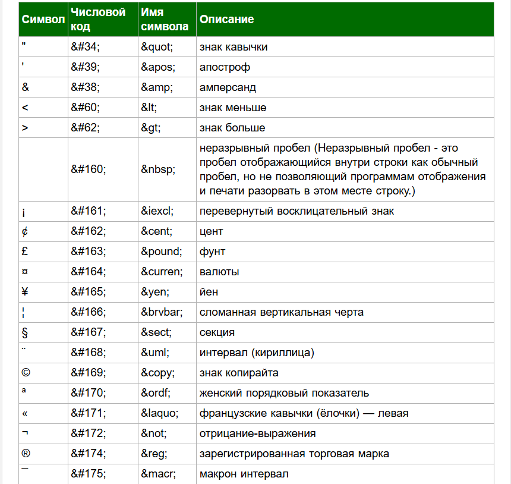
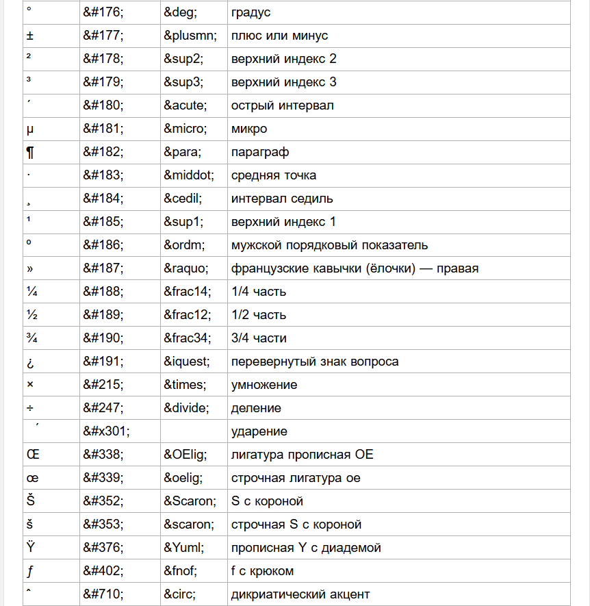
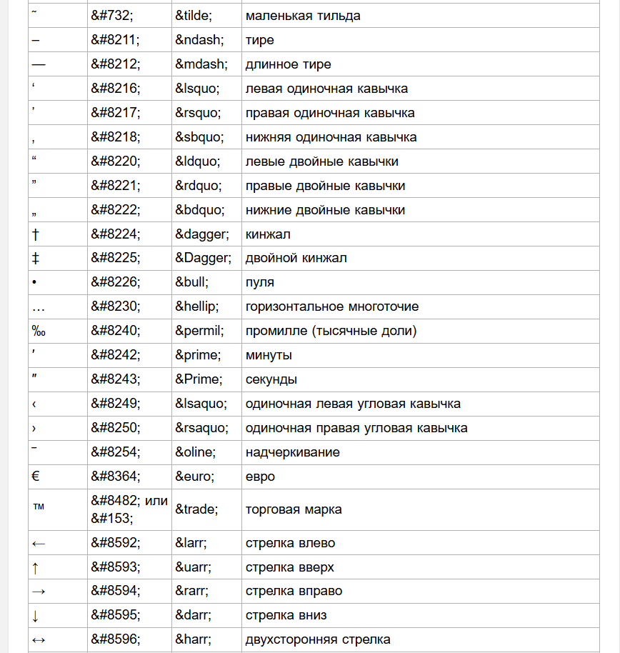
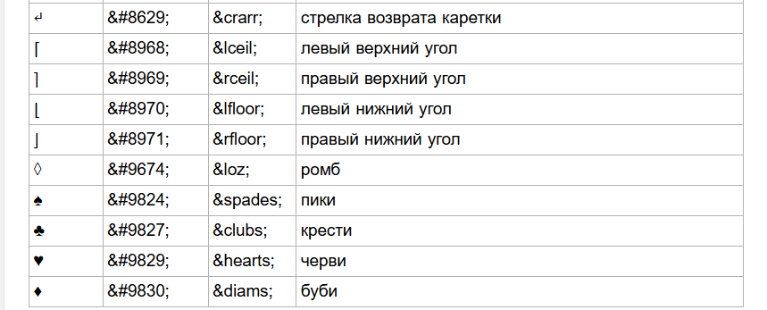
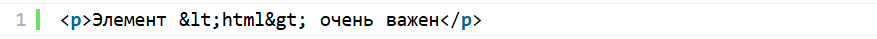
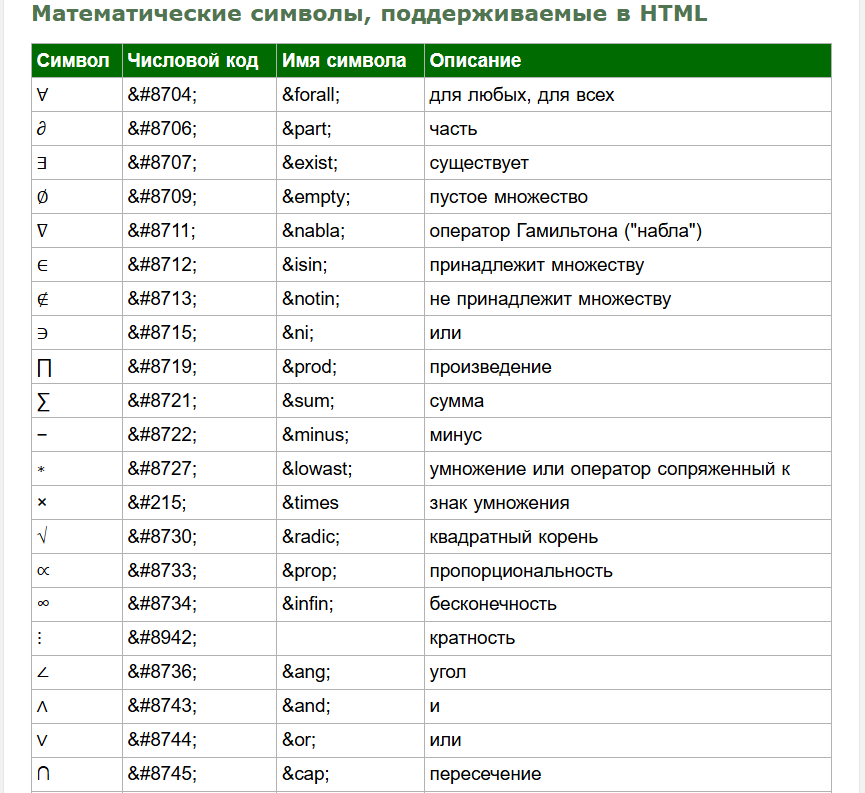
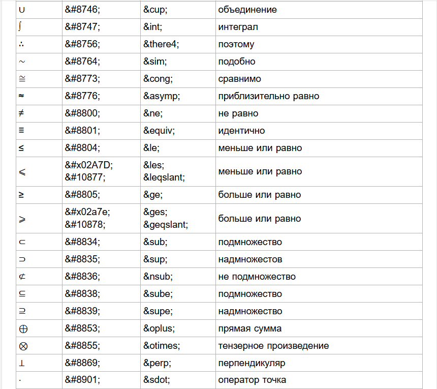

В этом уроке вы узнаете как образуется цвет RGB, и что такое специальные символы. Подведем итоги модуля, посвященного языку гипертекстовой разметки - HTML.
RGB — цветовая модель, которая определяет заданный цвет в соответствии с его красными, зелёными и синими компонентами. Также есть дополнительный Альфа-компонент, который представляет прозрачность цвета.
Цвета RGB могут быть выражены двумя способами:
Некоторые цвета и их коды в формате RGB:
white — #ffffff или #fff, rgb(255,255,255);
silver— #c0c0c0, rgb(192,192,192);
gray — #808080, rgb(128,128,128);
black— #000000 или #000, rgb(0,0,0);
maroon — #800000, rgb(128,0,0);
red — #ff0000 или #f00, rgb(255,0,0);
orange — #ffa500, rgb(255,165,0);
yellow — #ffff00 или #ff0, rgb(255,255,0).
Чтобы использовать альфа-компонент в RGB, нужно использовать функцию rgba(), где a — alpha. Альфа-канал определяет, насколько прозрачным должен быть цвет, и задаётся числом от 0 до 1, где 0 — полностью прозрачный цвет, а 1 — полностью непрозрачный.
Пример использования: создание полупрозрачного фиолетового фона:
Помимо альфа-канала, функция rgba() позволяет использовать значения для красного, зелёного и синего
компонентов цвета.
Эти компоненты могут быть заданы целыми числами в диапазоне от 0 до 255, которые определяют интенсивность
каждого цвета.
Также для цветовых каналов можно использовать процентные значения в диапазоне от 0% до 100%.
Например, rgba(255, 0, 0, 0.5) создаёт полупрозрачный красный цвет, а rgba(100%, 0%, 0%, 0.5) — цвет с
процентными
значениями для цветовых каналов.
Спецсимволы HTML – это специальные языковые конструкции, которые ссылаются на символы из набора символов, используемых в текстовых файлов. В таблице приведен список зарезервированных и специальных символов, которые не могут быть добавлены в исходный код HTML-документа с помощью клавиатуры:
Такие символы добавляются с помощью числового кода или имени.
Для добавления любого символа, перечисленного ниже, на вашу веб-страницу, просто вставьте код символа (или
его имя) в
месте, где требуется отобразить выбранный символ.




Зачем нужны спецсимволы и как ими пользоваться


